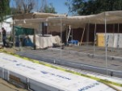
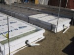
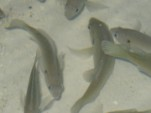
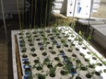
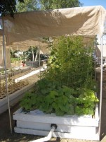

J & J Aquafarms
Consultant and Supplier for Aquaculture and Aquaponic systems
Home
About
Order
Plants
Fish
Fish Food
Technical Bulletins (Free)
Aquaponics
Build your own
CART
Sanger HS
Caruthers HS
Clovis Water
Avenal
Blog
Stay
Avenal Community Health Center Community Aquaponic Garden




